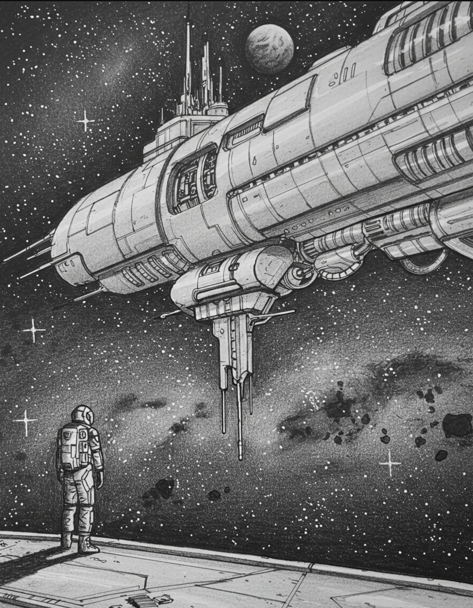

A sudden blackout. An errant cat. A mystery hidden in the ship's footage.
You are working in the laboratory, preparing your mice specimen for a test run simulating landing on the planet of Mars. One or two mice quietly climb out of the box, but you don’t mind too much, Miles will be able to catch them, anyways he is both emotional support cat and also spare mouse hunter. You grab the pipette, and prepare the solution that will help feed the mice for their journey to the surface of Mars. Suddenly, the lights go out.
The success of the mission, and the future of the Mars exploration colony rests on your shoulders. You can't let this mission fail.
Begin the Investigation
How to Play
- Read the description of the current scene.
- Select one of the available choices.
- Watch your health!
- Search the spaceship for the power switch.
- Restore the power to view the security footage.